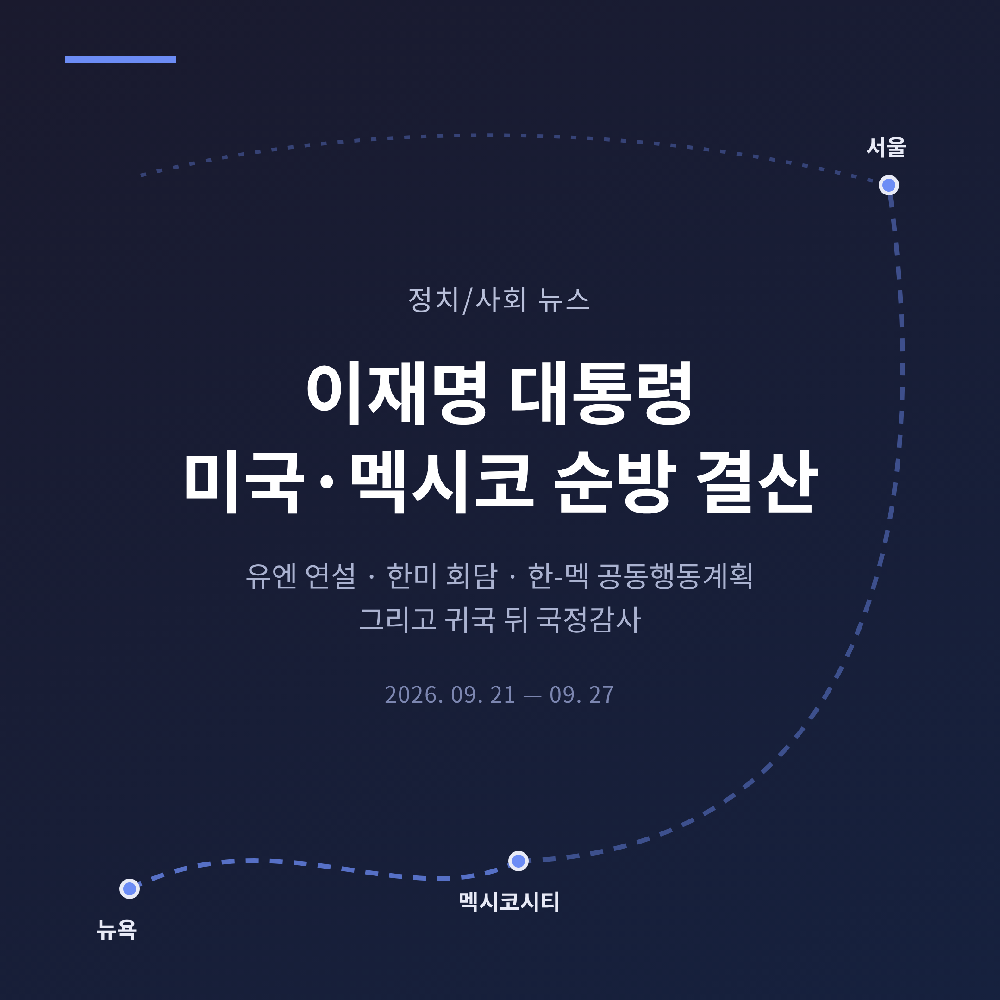
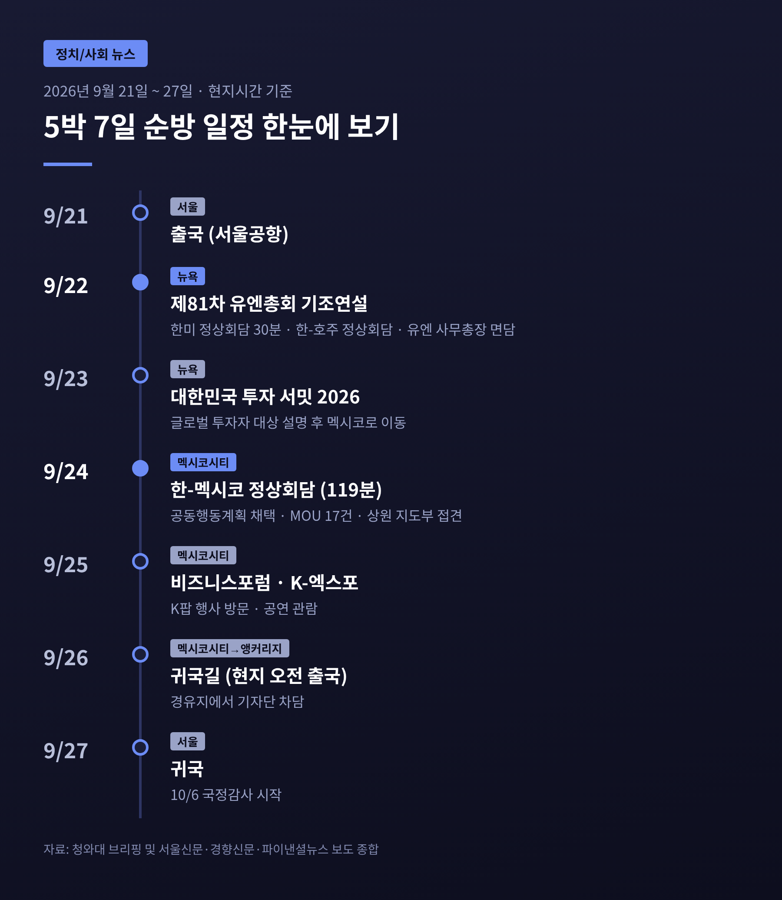
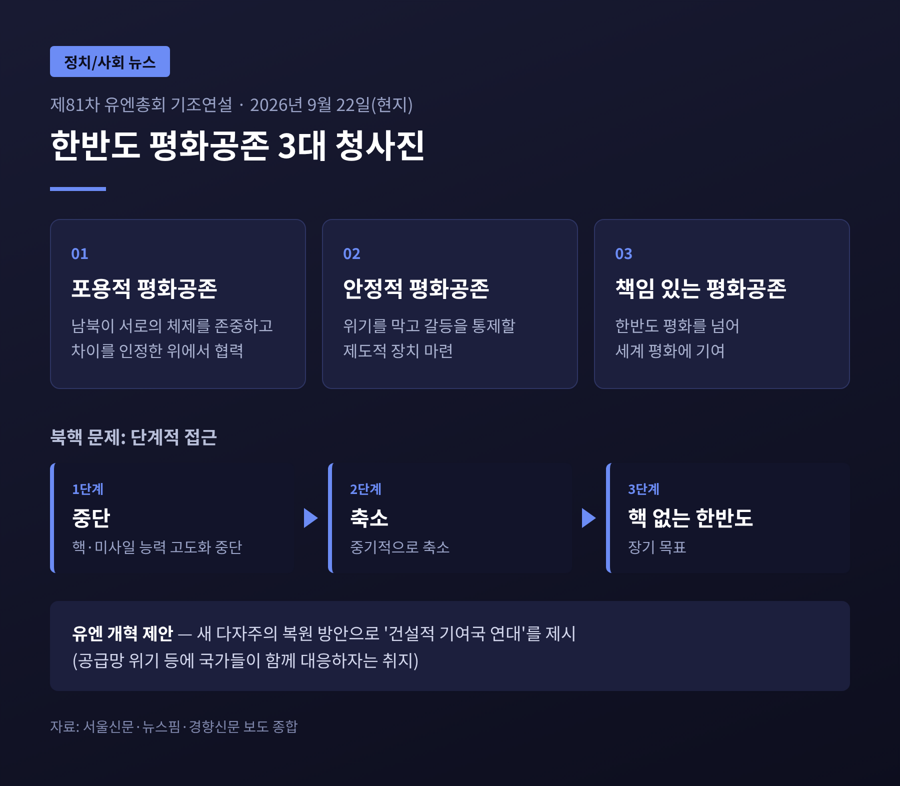
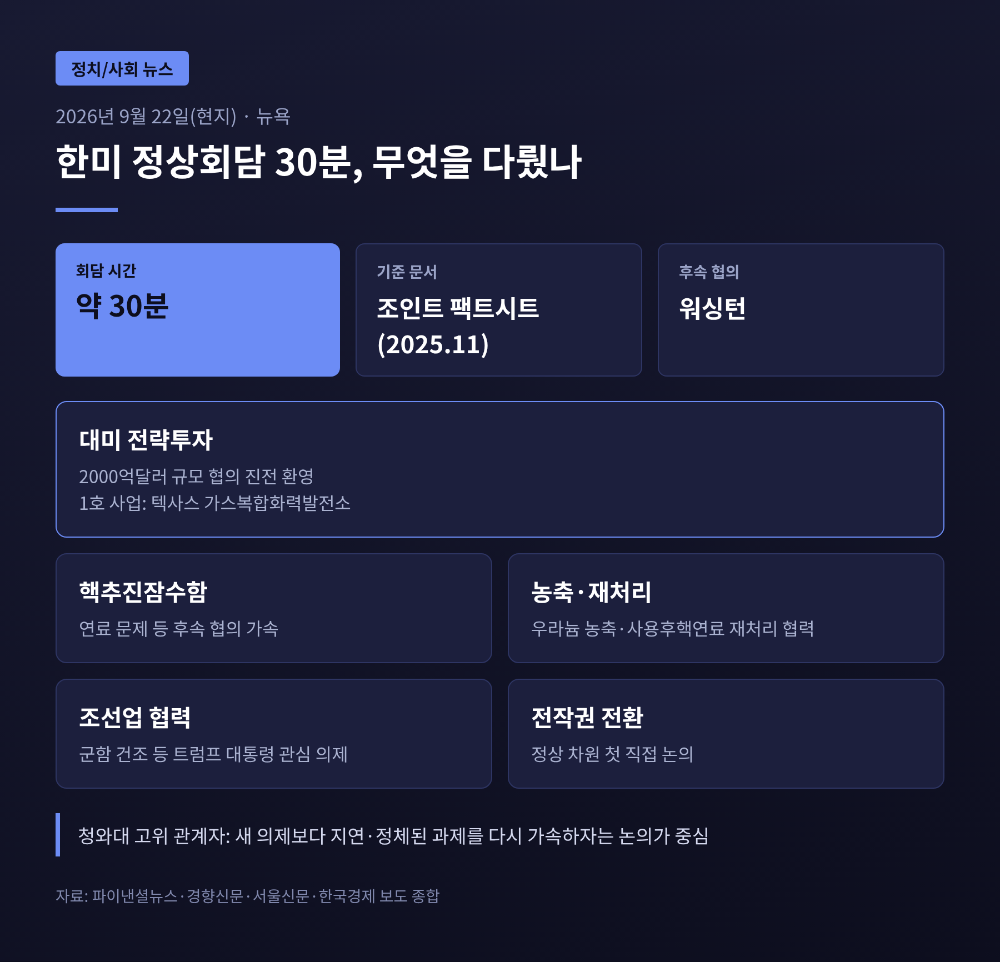
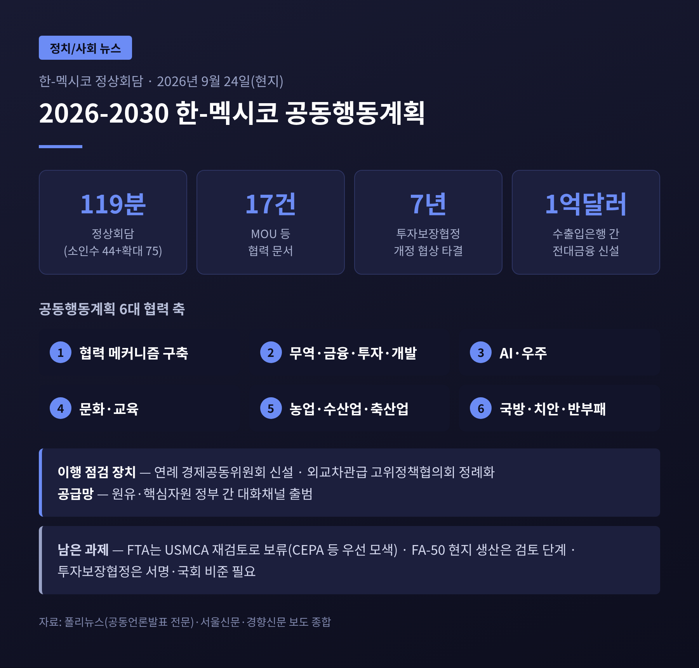
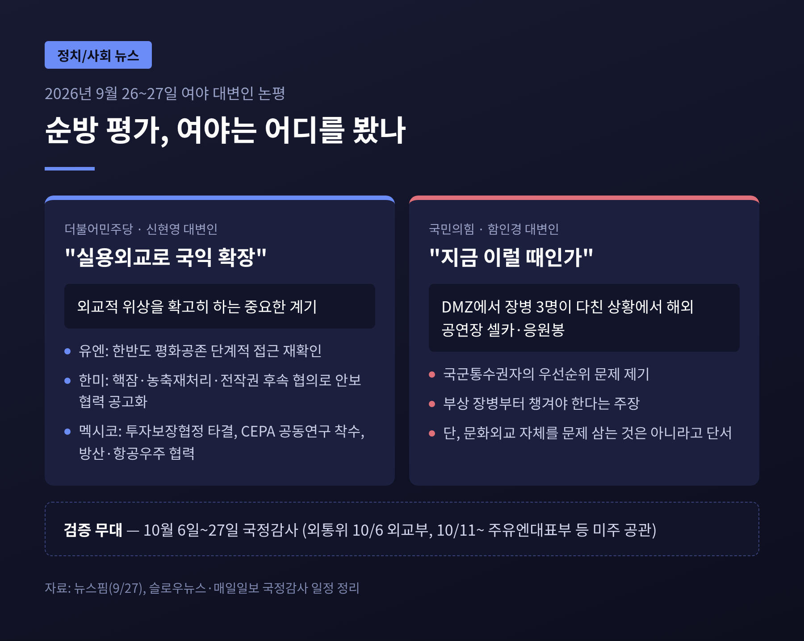

이번 글에서는 이재명 대통령의 5박 7일 미국·멕시코 순방을 결산해 보겠습니다.
핵심만 먼저 말씀드리면, 뉴욕에서는 '안보 협상 재가동', 멕시코에서는 '경제협력의 제도화'가 이번 순방의 두 축이었습니다.
다만 대미투자의 실익, 방산·FTA의 후속 성과, 그리고 귀국 직후 국정감사까지 풀어야 할 숙제도 함께 안고 돌아옵니다.
3줄 요약
이 대통령은 9월 21일 서울공항을 떠났습니다.
첫 행선지는 제81차 유엔총회가 열린 미국 뉴욕이었습니다.
유엔총회 참석은 2년 연속입니다.
뉴욕 일정은 이틀에 몰려 있었습니다.
22일에는 기조연설과 한미 정상회담, 한·호주 정상회담, 구테흐스 유엔 사무총장 면담이 이어졌습니다.
23일에는 '대한민국 투자 서밋 2026'에서 글로벌 투자자들에게 한국의 AI 정책과 자본시장 개혁 방안을 설명했습니다.
이어 멕시코로 향했습니다.
한국 대통령의 멕시코 국빈방문은 16년 만입니다.
24일 정상회담, 25일 비즈니스포럼과 K-엑스포를 소화한 뒤 26일 오전(현지) 귀국길에 올랐습니다.
알래스카 앵커리지를 거쳐 27일 서울에 도착하는 일정입니다.

기조연설의 중심은 한반도였습니다.
이 대통령은 '평화공존 3대 청사진'을 국제사회에 제시했습니다.
북핵 문제에는 단계론을 내놓았습니다.
먼저 핵·미사일 능력의 고도화를 멈추고, 중기적으로 축소를 거쳐, 장기적으로 핵 없는 한반도로 가자는 구상입니다.
경향신문은 연설에서 평화체제 논의의 당사자로 미국과 중국이 처음 거론됐다고 짚었습니다.
남북·미·중 다자협의 틀을 염두에 둔 대목으로 읽힙니다.
유엔 자체에도 날을 세웠습니다.
"유엔은 과연 인류를 구하고 있는가"라고 물으며, 새 다자주의의 방법으로 '건설적 기여국 연대'를 제안했습니다.
호르무즈 해협 봉쇄 같은 공급망 위기에 나라들이 함께 대응하자는 취지입니다.
평가는 엇갈립니다.
여당은 한반도 문제의 단계적 접근을 국제사회에 재확인했다고 평가했습니다.
반면 한국경제는 사설에서 공급망 연대 제안이 행동으로 이어지지 않으면 공허한 울림에 그칠 수 있다고 지적했습니다.

한미 정상회담은 원래 확정된 일정이 아니었습니다.
2000억달러 규모 대미 전략투자 협의가 막판에 진전을 보이면서 전격 성사됐습니다.
22일 저녁 트럼프 대통령이 주최한 리셉션 직전, 별도 공간에서 약 30분간 진행됐습니다.
취임 후 세 번째 정상회담입니다. 일부 보도는 환담을 포함해 네 번째 만남으로 셉니다.
테이블에 오른 의제는 다음과 같습니다.
전작권 전환을 두 정상이 직접 논의한 것은 이번이 처음이라고 합니다.
보도에 따르면 이 대통령은 전작권에, 트럼프 대통령은 군함 건조 등 조선 협력에 비중을 뒀습니다.
후속 협의는 워싱턴에서 이어가기로 했습니다.
눈여겨볼 대목이 있습니다.
청와대 고위 관계자는 "새로운 주제는 별로 없었다"고 설명했습니다.
지난해 11월 양국이 발표한 공동 설명자료(조인트 팩트시트)의 과제들을 다시 살려 속도를 내자는 자리였다는 뜻입니다.
예전엔 관세 협상이 한미 관계의 발목을 잡았습니다.
지금은 투자 합의가 안보 협상의 문을 다시 여는 열쇠가 된 셈입니다.
그렇다고 투자 문제가 끝난 것은 아닙니다.
정부는 22일 텍사스주 가스복합화력발전소 건설을 1호 사업으로 확정했고, 원전 8기와 알래스카 LNG 등을 후속으로 협의 중입니다.
한국경제는 사설에서 손실 방지 장치는 최소한의 방어막일 뿐이며 알래스카 LNG처럼 경제성이 검증되지 않은 사업은 철저히 따져야 한다고 주문했습니다.
27일에는 1호 사업의 공식 발표가 닷새째 나오지 않고 있다는 보도도 나왔습니다.

멕시코에서의 성과는 숫자로 먼저 보는 편이 이해가 빠릅니다.
| 항목 | 내용 |
|---|---|
| 회담 시간 | 소인수 44분 + 확대 75분, 총 119분 |
| 채택 문서 | '2026-2030 한-멕시코 공동행동계획' |
| 협력 문서 | MOU 등 17건 |
| 투자보장협정 | 7년 협상 끝에 개정 타결 (서명·국회 비준 남음) |
| 금융 | 양국 수출입은행 간 1억달러 전대금융 신설 |
| 공급망 | 원유·핵심자원 정부 간 대화채널 출범 |
공동행동계획은 앞으로 5년의 협력 로드맵입니다.
협력 메커니즘, 무역·금융·투자·개발, AI·우주, 문화·교육, 농수축산, 국방·치안·반부패까지 6개 축을 담았습니다.
연례 경제공동위원회를 새로 만들어 이행 상황을 해마다 점검하기로 한 점이 특징입니다.
합의가 사진 한 장으로 끝나지 않게 하려는 장치로 보입니다.
개정 투자보장협정에는 2002년 원협정 이후 발전한 국제 투자 규범이 반영됐습니다.
페이퍼컴퍼니의 무분별한 소송을 막고, 외환위기 때도 투자자금을 옮길 수 있게 보장하는 내용 등입니다.
원유 분야에서는 지난 5월 정상 통화 이후 한국 기업에 추가 물량이 공급된 경험을 제도화한 채널이 생겼습니다.
방산도 의제에 올랐습니다.
멕시코의 군 현대화 사업과 맞물려 FA-50 등 항공우주 제품을 현지에서 생산하는 방안을 검토하기로 했습니다.
다만 청와대 관계자는 "즉각적인 계약으로 이어지지는 않았다"고 밝혔습니다.
아쉬운 부분도 분명합니다.
한국이 가장 원했던 FTA는 이번에 진전되지 못했습니다.
멕시코가 미국과 USMCA 재검토를 진행 중이고, 미국이 원산지 기준을 까다롭게 요구하고 있기 때문입니다.
정부는 우선 국장급 공동위원회에서 공동이익을 연구하고, FTA보다 낮은 단계인 포괄적경제동반자협정(CEPA) 등을 먼저 모색하는 쪽으로 방향을 잡았습니다.

순방에 대한 여야의 시선은 크게 갈렸습니다.
더불어민주당 신현영 대변인은 이번 순방을 "대한민국의 외교적 위상을 확고히 하는 중요한 계기"라고 평가했습니다.
한미 안보 의제의 후속 협의를 "한미 안보 협력을 한층 공고히 하는 성과"로, 투자보장협정 타결과 CEPA 공동연구 착수를 경제 성과로 꼽았습니다.
국민의힘은 방향이 달랐습니다.
함인경 대변인은 대통령 부부가 멕시코에서 스트레이키즈 공연을 관람하며 셀카를 찍고 응원봉을 흔든 장면을 겨냥했습니다.
며칠 전 서부전선 DMZ에서 장병 3명이 지뢰 추정 폭발로 크게 다친 상황에서 부적절했다는 것입니다.
그러면서도 "K-팝을 알리는 문화외교 자체를 문제 삼는 것은 아니다"라는 단서도 달았습니다.
두 평가는 서로 다른 곳을 보고 있습니다.
여당은 협상 테이블의 결과를, 야당은 국군통수권자의 우선순위를 묻고 있습니다.
둘 다 이번 순방을 읽는 데 필요한 질문이라고 생각합니다.

돌아오는 길이 가볍지만은 않습니다.
서울신문은 귀국 후 현안을 이렇게 정리했습니다.
그리고 10월 6일, 국정감사가 시작됩니다.
27일까지 3주간 이어지고, 운영위의 대통령비서실 감사 등은 30일까지 계속됩니다.
외교통일위원회는 10월 6일 외교부를 시작으로, 11일부터는 주유엔대표부와 뉴욕총영사관 등 미주 재외공관을 찾습니다.
순방 성과를 두고 가장 먼저 질문이 쏟아질 무대입니다.
멕시코와 타결한 투자보장협정도 국회 비준동의를 거쳐야 발효됩니다.
외교 성과의 마지막 단계는 결국 국내 정치에서 완성된다는 뜻입니다.
앞으로 지켜볼 지점은 네 가지입니다.
마지막으로 한 가지만 덧붙이겠습니다.
이번 순방은 약속을 많이 얻어 온 여정이었습니다.
안보 협의의 재가동, 5년짜리 행동계획, 7년 만의 협정 타결이 모두 그렇습니다.
"외교의 성적표는 서명한 날이 아니라 이행한 날에 매겨진다."
순방이 성공했느냐고 물으신다면, 지금은 절반쯤 답할 수 있다고 말씀드리겠습니다. 나머지 절반은 앞으로의 몇 달이 채워 갈 것입니다.